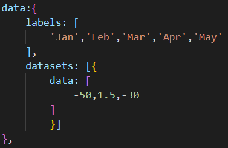
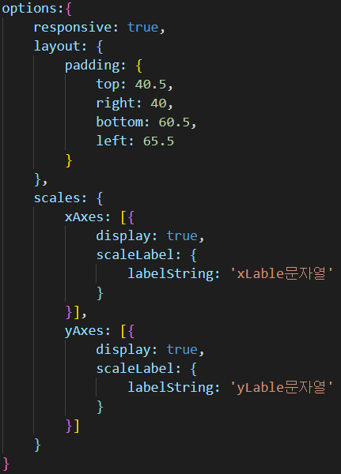

Config
# config = {};
최상단을 기준으로 아래에 data, options가 위치한다.
1. data = {};

labels[array] = x축 레이블
datasets[array[object]] = data 정보를 담은 array - datasets 하위
data[array] = 실제 x,y포인트 지점에 해당하는 data 값이다.
(이 data값의 갯수와 labels[array]와 매칭된다)
2. options = {};

responsive = [default : false], true일 경우 창의 크기에 따라 다시 그려진다.
layout[object] = 차트의 padding, margin, color (현재 padding만 지원)
- layout 하위
padding[object] = 차트의 padding 지정
scales[object] = x,y축에 대한 lable 지정
xAxes = x축에 대한 label, display 유무 지정
scaleLable[object] = x축에 대한 label 문자열
display = [default : false], true일 경우, scaleLabel에 지정한 문자열 출력 유무